En esta unidad el estudiante podrá entender cómo se dan las decisiones a nivel automático y neuronal. Las
personas se ven inmersas hoy en un mundo sometido a fuertes cambios tecnológicos que están, sin lugar a
duda,
condicionando sus hábitos, estilos de vida, comunicación y la toma acertada de una decisión resulta
importante
para la determinación del rumbo que se tomará, con implicaciones a nivel personal, familiar, empresarial,
nacional, etc. La toma de decisiones requiere de un proceso lógico, en donde se plasmen las diversas
alternativas, pros y contras de cada una, para decidir el mejor camino a seguir en la consecución de las
metas
establecidas.
En esta unidad el estudiante podrá conocer varias aplicaciones de las tecnologías de la información,
específicamente de la Inteligencia Artificial que son útiles para la acertada toma de decisiones facilitando
dicho proceso.
Las decisiones pueden limitarse a una sola persona, pero también pueden involucrar a toda una organización.
Incluso algunas pueden venir condicionadas por el entorno exterior (Mc Devitt et. al., 2007).
El estudiante podrá comprender que el método de árbol de decisión consiste en aquella representación
gráfica
de una serie de secuencias lógicas que interpretan una realidad, más o menos compleja. Dicha realidad estará
desglosada en una o varias secuencias de eventos, ordenados estos según una línea temporal coherente. De
este
modo, los sucesos más recientes vendrán precedidos por otros anteriores, hilvanados y originando las
diferentes alternativas de las que el sujeto se servirá para tomar una decisión al problema planteado.
Algunos
de estos eventos se conocen como eventos aleatorios; aquellos cuya realización vendrá influida por una
probabilidad, causa de la intervención de variables externas al individuo que condicionaran los posibles
resultados. Otros sin embargo no, ya que serían decisiones que atañerían exclusivamente al decisor y, por lo
tanto, no estarían condicionados por el entorno, (Fernández, 2015).
También el estudiante comprenderá que las Redes Neuronales Artificiales según (Callejas, Piñeros, Rocha,
Hernández, & Delgado, 2013), forman parte de la Inteligencia Artificial, además (Oliveira Colabone,
Ferrari, Da Silva Vecchia, & Bruno Tech, 2015) piensa que son redes entrenadas a través de las entradas
obtenidas a partir de escenarios externos o internos en el sistema y estas entradas se multiplican por pesos
asignados al azar, (Shaban, El-Hag, & Matveev, 2008) y que al igual que los árboles de decisión, las
redes
neuronales nos auxilian en la toma de decisiones desde el punto de vista neuronal del cerebro humano.
Otro tema que se abordará en esta unidad es el aprendizaje automático, el cual se basa en algoritmos
adaptativos y modelos estadísticos que se pueden suministrar como “datos de formación”, son algoritmos
enseñados que pueden aprender con datos que sirven de ejemplos (Guillespie,2014). Los resultados
customizados
de los motores de búsqueda, las sugerencias de los medios sociales y las recomendaciones al usuario on line,
son ejemplos de aprendizaje automático en funcionamiento.
La importancia de los algoritmos de aprendizaje automático está en que muestran algunas tendencias de
novedad, adaptabilidad, anticipación y predicción. Con la formación basada en datos del pasado, el
aprendizaje
automático genera algoritmos enseñados que pueden interactuar con las personas y con las máquinas, y adaptar
su respuesta, apoyando también a la toma de decisiones.
Los algoritmos enseñados posibilitan que el entorno digital “aprenda de y sobre el usuario” y “replique”
con
retroalimentación y recomendaciones para acciones futuras. Esto obviamente requiere de supervisión humana.
Objetivo de unidad
Al finalizar el estudiante entenderá cómo se dan las decisiones a nivel automático y neuronal.
¡Bienvenidos a esta unidad!
4.1 Introducción al aprendizaje automático
En la actualidad, gracias a los avances de la informática, es posible almacenar y procesar grandes cantidades
de datos, así como acceder a datos ubicados físicamente en otras localidades geográficas a través de las redes
computacionales. En este contexto aparece el concepto de aprendizaje en informática, denominado también
aprendizaje de máquina o automático, que corresponde a programas computacionales que buscan optimizar los
parámetros de un modelo usando datos previos o datos de entrenamiento. Los modelos pueden ser inductivos,
cuando permiten hacer predicciones sobre el futuro o bien descriptivos cuando permiten generar conocimiento a
partir de los datos.
El aprendizaje automático usa la teoría estadística para construir modelos matemáticos, pues de esta manera
es posible hacer inferencias a partir de una muestra. La ciencia de la computación es requerida en la fase de
entrenamiento para la implementación de algoritmos de optimización eficientes, además de ser necesaria en las
tareas de almacenamiento y procesamiento de grandes volúmenes de datos. Una vez que un modelo es ajustado, se
requiere también eficiencia en su representación y solución algorítmica para la fase de inferencia.
Los métodos de aprendizaje automático han jugado un papel importante en la Inteligencia Artificial, desde sus
comienzos. Probablemente esto se debe a la probabilidad de aprender, adaptarse y modificar el comportamiento,
es un componente fundamental de la inteligencia humana.
El aprendizaje automático es una rama de la inteligencia artificial cuyo objetivo es desarrollar técnicas que
permitan a los ordenadores aprender sin ser programados de manera explícita (A. Samuel, 1959).
Algunas de las características del aprendizaje automático son:
No modela el aprendizaje humano
Es imposible prever todos los problemas desde el principio
Busca dar a los programas la capacidad de adaptarse, es decir de generalizar, sin tener que ser
reprogramados.
Los algoritmos de aprendizaje automático se pueden clasificar en supervisados y no supervisados. El
aprendizaje supervisado corresponde a la situación en que se tiene una variable de salida, ya sea cuantitativa
o cualitativa, que se desea predecir basándose en un conjunto de características. Se establece un modelo que
permite relacionar las características con la variable de salida. Luego se considera un conjunto de datos de
entrenamiento en los cuales se observan tanto los valores de la variable de salida como de las características
para determinados individuos (personas u otros). Usando tales datos se ajustan los parámetros del modelo, con
lo cual es posible predecir valores de la variable de salida para nuevos individuos. Este proceso de ajuste
del modelo se denomina aprendizaje supervisado, puesto que es un proceso de aprendizaje guiado por los valores
de la variable de salida.
El aprendizaje automático puede ser:
Aprendizaje supervisado
Entrada
Conjunto de instancias con sus etiquetas asociadas
Objetivo
A partir de conjunto de entrenamiento etiquetado
Construir modelo capaz de predecir la etiqueta de nuevas instancias
Distintos tipos
Clasificación
Regresión
Ejemplos
A partir de histórico de pasajeros, predecir número de pasajeros que volarán en navidades
Dada una imagen de un perro determinar la raza
A partir de información de una vivienda determinar su precio
Determinar si un mensaje es spam
El objetivo del aprendizaje supervisado es la predicción: Dado el valor de un vector de entrada X, generar
una buena predicción Y de la salida Y.
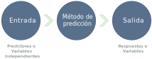
El problema de la Clasificación
Uno de los problemas clásicos que abordan los algoritmos de aprendizaje supervisado es la clasificación.
Consideremos el siguiente ejemplo:
Supongamos que se disponen de datos que consisten de dos variables de entrada X1 y X2 y una variable de
salida con dos valores 0 o 1.
Clasificador Lineal
Una estrategia de aprendizaje sería ajustar una regresión con los datos de entrenamiento:
yˆ(x) = βˆ0 +βˆ1x1 +βˆ2X2
y luego definir como criterio de clasificación:
C(x) = (0 si x <ˆ 0,5
1si xˆ >= 0,5
Para valores de entrada que se ubiquen en el plano sobre la línea recta, el clasificador predice una salida
de valor 1 y en caso contrario el valor que predice es 0.
El aprendizaje no supervisado corresponde a la situación en que existe un conjunto de datos que contienen
diversas características de determinados individuos, sin que ninguna de ellas se considere una variable de
salida que se desee predecir. En este caso la tarea de aprendizaje es describir cómo están organizados los
datos, posibles asociaciones entre ellos o agrupamientos.
Aprendizaje no supervisado
Entrada
Conjunto de instancias
Objetivo
Grupos de instancias similares entre ellas, no hay experto que diga los grupos a buscar
Tipos
Clustering
Clustering jerárquico
Reducción de la dimensionalidad
Ejemplos
Agrupar libros por título
Agrupar imágenes por distribución de colores
Agrupar palabras por contexto
La Minería de datos es el concepto acuñado en el mundo del negocio para la aplicación del aprendizaje
automático en grandes volúmenes de datos con el objeto de extraer información de los mismos. Aplicaciones de
Minería de Datos se han extendido a diversas áreas, como por ejemplo el estudio del comportamiento de consumo
de los clientes de un supermercado. En finanzas bancarias los datos históricos se utilizan para construir
modelos de riesgo de créditos, detección de fraudes entre otros. En el área de manufactura, los modelos de
aprendizaje se utilizan para optimización, control y resolución de problemas. En medicina, existen
aplicaciones para el diagnóstico médico. En telecomunicaciones, los patrones de llamadas son analizados para
optimización y maximización de la calidad de servicio. En ciencia, grandes volúmenes de datos se pueden
analizar también con estas técnicas. Los algoritmos de reconocimiento de patrones son otro ejemplo de
aplicación del aprendizaje automático para solucionar problemas de visión, reconocimiento de discurso y
robótica.
4.2 Redes neuronales1
Las Redes Neuronales son un paradigma de aprendizaje y procesamiento automático inspirado en la forma en que
funciona el cerebro para realizar las tareas de pensar y tomar decisiones (sistema nervioso). El cerebro se
trata de un sistema de interconexión de neuronas en una red que colabora para producir un estímulo de salida.
Existe una gran variedad de definiciones de lo que es una red neuronal artificial, a continuación se enuncian
algunas:
Una red neuronal es un modelo computacional, paralelo, compuesto de unidades procesadoras
adaptativas con una alta interconexión entre ellas (Hassoun, 1995).
Sistemas de procesado de la información que hacen uso de algunos de los principios que organizan la
estructura del cerebro humano (Lin, 1996).
Modelos matemáticos desarrollados para emular el cerebro humano (Chen, 1998).
Sistema de procesado de la información que tiene características de funcionamiento comunes con las redes
neuronales biológica (Fausett, 1994).
Sistema caracterizado por una red adaptativa combinada con técnicas de procesado paralelo de la
información (Kung, 1993).
Desde la perspectiva del reconocimiento de patrones de redes neuronales son una extensión de métodos
clásicos estadísticos (Bishop, 1996).
Podemos observar que, en todas las definiciones anteriores, el componente de simulación del comportamiento
biológico aparece. Podemos también definir el aprendizaje de una red como el proceso por el cual modifica las
conexiones entre neuronas para realizar la tarea deseada.
En 1960 Widrow y Hoff presentan su ADALINE. Estas siglas tienen una historia curiosa: Cuando las redes
neuronales estaban en su máximo apogeo eran el acrónimo de Adaptive Linear Neuron; cuando las cosas empezaron
a ir mal para las redes neuronales aunque se seguían utilizando por sus buenos resultados se cambió a Adaptive
Linear Element. El sistema planteado por Widrow estaba regido por un algoritmo de aprendizaje muy sencillo
denominado LMS (Least Mean Square). El trabajo de Widrow posibilitó el desarrollo de un área del procesado
digital de señales (control de sistemas) que se conoce con el nombre de procesado (control) adaptativo
(Haykin, 1996).
En 1982 Kohonen publica un importante artículo sobre mapas auto organizativo que se ordenan de acuerdo a unas
simples reglas.
Ventajas de las redes neuronales:
Da clic en cada uno de los títulos para obtener más
información.
Una neurona es un elemento no lineal por lo que una interconexión de ellas (red neuronal) también
será un dispositivo lineal. Esta propiedad permitirá la simulación de sistemas no lineales y
caóticos, simulación que, con los sistemas clásicos lineales, no se puede realizar.
Una red neuronal, al ser un sistema distribuido, permite el fallo de algunos elementos individuales
(neuronas) sin alterar significativamente la respuesta total del sistema. Este hecho las hace
especialmente atractivas frente a las computadoras actuales que, por lo general, son sistemas
secuenciales de tal forma que un fallo en uno de sus componentes conlleva que el sistema total no
funcione.
Una red neuronal tiene la capacidad de modificar los parámetros de los que depende su
funcionamiento de acuerdo con los cambios que se produzcan en su entorno de trabajo (cambios en las
entradas, presencia de ruido, etc.). Con respecto a la capacidad de adaptación hay que tener en
cuenta que ésta no puede ser tampoco excesivamente grande ya que conduciría a tener un sistema
inestable respondiendo a pequeñas perturbaciones. Este es el problema conocido como el dilema
plasticidad – estabilidad.
Las redes neuronales son capaces de relacionar dos conjuntos de datos. Comparando con los métodos
estadísticos clásicos que realizan la misma misión tienen como principal ventaja que los datos no
tienen por qué cumplir las condiciones de linealidad y estacionariedad (Proakis, 1997).
Esta posibilidad permite que estos sistemas puedan ser aplicados en sistemas de tiempo real,
simulando sistemas biológicos mediante elementos de silicio. Uno de los científicos más prolíficos
en este campo ha sido el profesor Calvin Mead (Mead, 1987 y Mead, 1988).
En el campo de las redes neuronales se conoce con el nombre de arquitectura la forma en la que se
unen los diferentes elementos, neuronas, mediante una serie de conexiones, pesos sinápticos. En
principio podemos distinguir tres niveles, en cuanto a arquitectura se refiere, que los podemos
definir como:
Microestructura: Este nivel hace referencia al elemento más pequeño que nos
podemos encontrar en un modelo conexionista: La neurona. Este es el nivel más pequeño, pero no por
ello es el menos importante.
Mesoestructura: Una vez sobrepasado el nivel neuronal llegamos a este nivel
donde se fija la forma de conexión y la disposición de los elementos explicados anteriormente.
Macroestructura: Las diferentes redes planteadas en el nivel anterior se pueden
combinar entre sí para dar estructuras mayores alcanzándose mejores prestaciones.
La creación de un modelo en el ordenador que iguale o adopte las distintas funciones básicas del cerebro, es
el resultado de una nueva tecnología llamada Computación Neuronal o también Redes Neuronales Artificiales.
En este mismo sentido, (Callejas, Piñeros, Rocha, Hernández, & Delgado, 2013, pág. 1) afirman que las
Redes Neuronales Artificiales son una familia de técnicas de procesamiento de información inspirado por la
forma de procesar información del sistema nervioso biológico porque se inspira en el sistema nervioso de un
ser vivo, tratando de “emular el comportamiento del cerebro, (Tahir, ul-Hassan, & Asghar Saqib, 2016, pág.
50) y (Molino, Cardoso, Ruíz, & Sánchez, 2014, pág. 1) opinan que es capaz de resolver funciones altamente
no lineales en un tiempo corto porque aprenden de los datos que son difíciles de expresarlas matemáticamente,
son “herramientas poderosas para el análisis de señales y la modelación de sistemas”.
Las Redes Neuronales Artificiales, ANN (Artificial Neural Networks) están inspiradas en las redes neuronales
biológicas del cerebro humano, algunas de sus características son las siguientes:
Están constituidas por elementos que se comportan de forma similar a la neurona biológica en sus funciones
más comunes.
Las ANN al margen de "parecerse" al cerebro presentan una serie de características propias del cerebro.
Las ANN aprenden de la experiencia, generalizan de ejemplos previos a ejemplos nuevos y abstraen las
características principales de una serie de datos.
Las ANN pueden cambiar su comportamiento en función del entorno. Se les muestra un conjunto de entradas y
ellas mismas se ajustan para producir unas salidas consistentes. Es decir aprenden, adquieren el
conocimiento de una cosa por medio del estudio, ejercicio o experiencia.
Las ANN generalizan (extender o ampliar una cosa) automáticamente debido a su propia estructura y
naturaleza. Estas redes pueden ofrecer, dentro de un margen, respuestas correctas a entradas que presentan
pequeñas variaciones debido a los efectos de ruido o distorsión.
Algunas ANN son capaces de abstraer (aislar mentalmente o considerar por separado las cualidades de un
objeto) esencia de un conjunto de entradas que aparentemente no presentan aspectos comunes o relativos.
Las redes neuronales artificiales según (Hilera González & Martínez Hernando, 1995), es que se las
entienden como un esquema computacional distribuido que básicamente se asimila a una estructura del sistema
nervioso de los seres humanos.
Las tres características fundamentales que (Gestal, 2014) considera en una red neuronal:
Topología de red: Permite determinar la capacidad representativa de como una cantidad
de neuronas están distribuidos en capas y distribuidas entre sí. En donde la topología de red se basa en
el problema a resolver.
Regla de aprendizaje: Una red neuronal es una integración de diversos
sistemas de aprendizaje, es por ello que tienen la capacidad de aprender a través de un entrenamiento
previo.
Tipo de entrenamiento: Una Red Neuronal Artificial, presenta dos tipos de
entrenamiento, una que durante la etapa de aprendizaje la red se entrena para que los pesos sinápticos
se adecuen a la red. La segunda es una etapa de ejecución en donde la red ya pasa ser operativa cuya red
toma un valor de funcionamiento real.
Ventajas y desventajas de las Redes Neuronales Artificiales
(Rivera, 2007), menciona algunas ventajas y desventajas de las Redes Neuronales:
Ventajas
Aprendizaje adaptativo en el cual aprende a realizar tareas a partir de un conjunto de
datos siendo así que en el proceso de aprendizaje de estos datos sean representados como entradas y pesos.
Auto-organización pueden crear su propia organización o representación de la información
recibida, las redes neuronales auto-organizan su información que reciben durante el aprendizaje de la
operación utilizando los métodos matemáticos Adeline, Madeline y Perceptron entre otros.
Tolerancia a fallos parciales sabiendo que la destrucción parcial de la red daña el
funcionamiento a la misma, pero no la destruye completamente. Esto es debido a la redundancia de la
información contenida, es decir, esto conlleva a que la información no se pierda ya que funciona como el
cuerpo humano.
Operación en tiempo real, que pueden ser llevadas a cabo por computadoras o dispositivos
de hardware especial para aprovechar así la capacidad de las RNA.
Desventajas
Menciona que las redes neuronales artificiales tienen complejidad para el aprendizaje de tareas grandes.
Elevado tiempo de aprendizaje, esto dependerá de, el número de patrones a reconocer y la flexibilidad para
reconocer patrones que sean bastante parecidos. (Rivera, 2007, pág. 64).
No tiene la capacidad de interpretar los resultados que esta produce siendo necesario por tal razón la
interpretación del desarrollador o de la aplicación para que le de significados a tales resultados.
Tiempo de convergencia, es decir existen aplicaciones que requieren un enorme conjunto de ejemplos para el
entrenamiento lo que se traduce en tiempo de cálculo.
Estructura de una Red Neuronal
Estructura básica de una Red Neuronal Según (Olabe & Basigain, 2001, pág. 2), la neurona se constituye
como la unidad fundamental dentro del sistema nervioso, cada una de estas es una unidad procesadora que puede
recibir y enviar señales a otras unidades, y así, si un sistema de entradas es fuerte se activa una salida
especifica. Como se muestra en la ilustración 1 la estructura de una red neuronal está conformado por el axón
que es la salida de la neurona, este se conecta con las dendritas o entradas por medio de la sinapsis, la cual
puede cambiar durante su proceso de aprendizaje.
Modelos Neuronales
En todo modelo artificial de neurona se tienen cuatro elementos básicos:
Un conjunto de conexiones, pesos o sinapsis que determinan el comportamiento de la neurona. Estas
conexiones pueden ser excitadoras (presentan un signo positivo), o inhibidoras (conexiones negativas).
Un sumador que se encarga de sumar todas las entradas multiplicadas por las respectivas sinapsis.
Una función de activación no lineal para limitar la amplitud de la salida de la neurona.
Un umbral exterior que determina el umbral por encima del cual la neurona se activa.
Esquemáticamente, una neurona artificial quedaría representada.
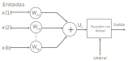
Figura 1.1 Esquema de un modelo neurona.
Matemáticamente las operaciones a realizar serían:
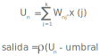
Donde p es una función no lineal conocida como función de activación.
Normalmente se asocia el umbral a la salida U. mediante una entrada (que vale l) y un peso adicional
asociado. Es decir:
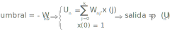
Arquitecturas neuronales
Los elementos básicos comentados anteriormente se pueden conectar entre sí para dar lugar a las estructuras
neuronales o modelos conexionistas que podríamos clasificar de diferentes formas según el criterio usado. Así
se tendría:
Según el número de capas
Redes neuronales mono capas: Se corresponde con la red neuronal más sencilla ya que se tiene
una capa de neuronas que proyectan las entradas a una capa de neuronas de salida donde se realizan diferentes
cálculos.
La capa de entrada, por no realizar ningún cálculo, no se cuenta de ahí el nombre de redes neuronales con una
sola capa. Una aplicación típica de este tipo de redes es como memorias asociativas.
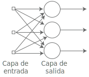
Figura 1.2 Red neuronal monocapa.
Redes neuronales multicapa: Es una generalización de la anterior existiendo un conjunto de
capas intermedias entre la entrada y la salida (capas ocultas). Este tipo de red puede estar total o
parcialmente conectada.
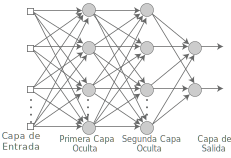
Figura 1.3. Esquema de una red neuronal multicapa.
Según el grado de conexión
Redes neuronales totalmente conectadas. En este caso todas las neuronas de una capa se
encuentran conectadas con las de la capa siguiente (redes no recurrentes) o con las de la anterior (redes
recurrentes).
Redes parcialmente conectadas: Neuronas desconectadas. En este caso no se da la conexión
total entre neuronas de diferentes capas.
Estas estructuras neuronales se podrían conectar entre sí para dar lugar a estructuras mayores: estamos en el
nivel de la meso estructura. Esta conexión se puede llevar acabo de diferentes formas siendo las más usuales
las estructuras en paralelo y jerárquicas. En la primera estructura se plantea un "consenso" entre las
diferentes redes para obtener la salida mientras que en la estructura jerárquica existen redes subordinadas a
otras que actúan como elementos centrales en la salida final de la red.
Métodos de aprendizaje
En una red neuronal es necesario definir un procedimiento por el cual las conexiones del dispositivo varíen
para proporcionar la salida deseada (algoritmo de aprendizaje). Los métodos de aprendizaje se pueden dividir
en las siguientes categorías (Rojas-95).
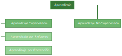
La primera gran división en los métodos de aprendizaje es entre algoritmos supervisados y no supervisados. En
los algoritmos no supervisados no se conoce la señal que debe dar la red neuronal (señal deseada). La red en
este caso se organiza ella misma agrupando, según sus características, las diferentes señales de entrada.
Estos sistemas proporcionan un método de clasificación de las diferentes entradas mediante técnicas de
agrupamiento o clustering.
El aprendizaje supervisado presenta a la red las salidas que debe proporcionar ante las señales que se le
presentan. Se observa la salida de la red y se determina la diferencia entre ésta y la señal deseada.
Posteriormente, los pesos de la red son modificados de acuerdo con el error cometido. Este aprendizaje admite
dos variantes: aprendizaje por refuerzo o aprendizaje por corrección. En el aprendizaje por refuerzo sólo
conocemos si la salida de la red se corresponde o no con la señal deseada, es decir, nuestra información es de
tipo booleana (verdadero o falso). En el aprendizaje por corrección conocemos la magnitud del error y ésta
determina la magnitud en el cambio de los pesos.
Estructuras neuronales
Las redes neuronales se pueden usar en una serie de estructuras según la aplicación a la que está destinado
el sistema. Así pues, según la disposición de la red neuronal se tendrán las siguientes estructuras:
Estructura directa
Esta estructura presenta el siguiente esquema de bloques:
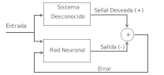
Figura 1.4 Esquema de una estructura directa.
Como se aprecia en la figura anterior, el sistema, en principio desconocido, y la red neuronal tienen las
mismas entradas por lo que se conseguirá el mínimo error (objetivo de la red neuronal) cuando la salida de la
red neuronal y la señal deseada sean iguales, o lo que es lo mismo, cuando la función de transferencia de la
red neuronal sea igual a la del sistema desconocido. Así pues esta estructura tiene como finalidad la
modelización de funciones de transferencia de sistemas de los que, en principio, no conocemos nada pero
tenemos la posibilidad de excitados con una determinada entrada y así conocer su salida.
Estructura inversa
En Figura 1.5 se da el diagrama de bloques de la estructura inversa:
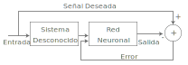
Figura 1.5 Esquema de bloques de la estructura inversa.
El mínimo error en esta estructura se obtendrá cuando la salida de la red neuronal sea la entrada al sistema
desconocido lo que conlleva que la función de transferencia de la red neuronal sea la inversa del sistema
desconocido. Hay que destacar que el perfecto funcionamiento de esta estructura depende de la estabilidad de
la inversa de la función de transferencia del sistema desconocido.
Aplicaciones típicas de esta estructura son la ecualización de canales de comunicación y la resolución de
problemas de deconvolución.
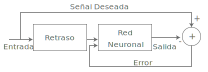
Figura 1.6 Esquema de bloques de la estructura inversa.
Según la definición de red neuronal, esta estructura tiende a minimizar la diferencia entre la señal deseada
(señal de entrada en el instante n) y la salida de la red neuronal que será un determinado valor obtenido con
valores de la señal. Se intenta, pues, modelizar la señal actual a partir de los valores anteriores de ésta.
Este sistema se puede usar, pues, en problemas de predicción (a partir de las muestras pasadas se puede
estimar la siguiente) y de control (si se conoce la evolución del sistema se puede alterar los parámetros de
dicho sistema para cambiar dicha evolución).
Da clic en cada uno de los títulos para obtener más
información.
Las aplicaciones de las redes neuronales las podríamos dividir según el tipo de problema a
resolver. Dentro de cada subgrupo podemos establecer otra división según el campo del conocimiento
donde se aplican.
Medicina
Las aplicaciones de clasificación en medicina encuentran su reflejo en problemas de diagnóstico
médico. Es uno de los campos con más futuro y, hoy por hoy, uno de los menos desarrollados.
Aplicaciones en este campo serían:
Diagnóstico de cardiopatías
En este tipo de aplicaciones nos encontramos con el trabajo de Bortolan en el que usando este
tipo de red clasifica una serie de ECG en diferentes tipos o clases (Bortolan-90) El mismo autor
en colaboración con otros presenta posteriormente una serie de modificaciones que mejoran sus
resultados, descomponiendo el conjunto de entrenamiento o la estructura de la red a entrenar
(Bortolan-91) o preprocesando los datos mediante una capa de RBF (Radial Basic Function)
aumentando así la sensibilidad y especificidad del dispositivo (Silipo-96) . En este mismo sentido
de mejorar el funcionamiento de la red, han aparecido una serie de trabajos en los que se usan
transformadas del ECG como entradas a la red, DFT (Tsai-90), (Dokur-96), DCT (Hilera-95),
(Kalita-93) y wavelets tShukia-93J; otros combinan transformadas con valores temporales
característicos del ECG (Thomson-93). Otros caminos son reducir el número de muestras de ECG
considerando sólo las más significativas (Har-93) o determinados parámetros de interés
(Pretorius-92). Una gran ventaja que ofrecen los perceptrones multicapa es la posibilidad de
implementarlos en sistemas VLSI (Leong-91). Esta posibilidad ha sido explotada para desarrollar
desfibriladores usando una red de este tipo como dispositivo de decisión (Jabri-95) (Coggins-95).
Detección de tumores cancerígenos
Una red neuronal entrenada localiza y clasifica en imágenes médicas la posible existencia de
tumores cancerígenos (Moallemi-91).
Determinación de puntos característicos del ECG
En esta aplicación la red neuronal se utiliza para determinar puntos del ECG que serán usados
posteriormente por el cardiólogo.
Predicción del riesgo de intoxicación por digoxina
En esta aplicación la tarea de la red neuronal es predecir el posible riesgo de ir por digoxina
que es un fármaco usado en problemas de (Camps-98), (Soria-98), (Martin-99).
Predicción de la respuesta emética
En esta aplicación la red neuronal determina como salida la respuesta emética. Esta respuesta
está relacionada con el número de náuseas y vómitos que siente un paciente oncológico tras un
tratamiento con quimioterapia (Serrano-98), (Soria-98).
Procesado de la señal
En este campo las redes neuronales han tenido auge, de tal forma que ya existe una sociedad
internacional sobre la aplicación de redes neuronales en problemas de procesado de la señal.
Algunos problemas de clasificación donde se aplican las redes neuronales serían: Ecualización de
canales de comunicación. Ecualizar un canal consiste en recuperar la señal que, al pasar a través
de un canal de comunicaciones, sufre una distorsión. (Molina, 1999).
Reconocimiento de patrones en imágenes
Esta aplicación evidencia la capacidad de las redes neuronales ya que se trata de una tarea
relativamente sencilla para un ser humano, pero tremendamente costosa de implementar en un sistema
artificial (Vincent-1995).
Reconocimiento de voz
Esta aplicación, de gran importancia de cara a la implementación de sistemas controlados por la
voz, ha encontrado en las redes neuronales un camino para su desarrollo (Waibel-1989).
Sonar y Radar
La capacidad de las redes neuronales para clasificar determinados objetos (imágenes, sonidos,
señales unidimensionales) les permite su aplicación en este campo como dispositivos para discernir
los diferentes objetivos (Gorman, 1996).
Economía
En esta disciplina, donde hay que tomar decisiones entre un número de opciones, las redes
neuronales son directamente aplicables frente a otros métodos por sus características
intrínsecamente no lineales. Así algunas de estas aplicaciones serían:
Concesión de créditos. En esta aplicación las redes neuronales en virtud de
determinados marcadores económicos de la persona que pide el préstamo deciden su viabilidad o
no.
Detección de posibles fraudes en tarjetas de crédito. Las redes neuronales
pueden ser usadas como elementos discriminativos para conceder o no una determinada cantidad en
un cajero automático.
Determinación de la posibilidad de quiebra de un banco. En esta aplicación la
red neuronal determina el riesgo de quiebra de un banco en virtud de determinados parámetros
económicos (Martin del Brío-1996).
Modelización
Da clic en cada uno de los títulos para obtener más
información.
Las aplicaciones de modelización en medicina están relacionadas con el procesado de determinadas
señales bioeléctricas tales como el electrocardiograma fatal (FECG), el electromiograma (EMG),
electroencefalograma (EEG), etc. Algunas aplicaciones en este campo serían:
Caracterización de la dinámica en la variabilidad cardíaca
La regulación del ritmo cardíaco se lleva a cabo por un sistema dinámico operando bajo un régimen
caótico. Funciones de Base Radial (RBF, Radial Basic Function) han sido usadas para determinar
esta dinámica (Bezerianos-1999).
Compresión de señales electrocardiográficas
Uno de los temas más activos actualmente en el campo de la ingeniería biomédica es la
telemedicina. Esta disciplina consiste en el desarrollo de algoritmos que permitan el diagnóstico
de una determinada enfermedad sin que el paciente se tenga que desplazar al centro médico. Las
diferentes señales que necesita el médico se transmiten vía telefónica. Para aumentar la eficacia
de esta transmisión se podría pensar en la compresión de la señal que consiste en aplicar
diferentes algoritmos para reducir su tamaño. Uno de los métodos de compresión es con redes
neuronales (Hilera-1995).
Predicción de enfermedades degenerativas cardíacas
Pacientes que han sufrido un infarto recientemente presentan un cierto factor de riesgo de sufrir
otro. Anderson plantea una red que intenta modelizar el comportamiento de las arterias coronarias
(Anderson-1996). En este mismo sentido se orienta el trabajo de Azuaje que hace uso de técnicas no
lineales como son los diagramas de Poincaré (Azauje-1999).
Farmacia
Aplicaciones de modelización en farmacia las podemos encontrar principalmente en el campo de la
farmacocinética ya que esta disciplina intenta determinar modelos que predigan la concentración de
un determinado fármaco en sangre. Algunas de estas aplicaciones serían:
Predicción del nivel de Tacrolimus en sangre
Este fármaco se utiliza en la terapia post-trasplante. Presenta un estrecho ámbito terapeútico
(la concentración en sangre se debe mantener entre 5 y 15 ng/ml. El empleo de un perceptrón
multicapa ha demostrado su utilidad en la predicción del nivel de ente fármaco en sangre
(Chen-1999).
Predicción del nivel de ciclosporina
La ciclosporina es un fármaco usado habitualmente para evitar la reacción de rechazo en
transplantes de riñón, corazón, pulmón e hígado.
Predecir la concentración de este fármaco a corto plazo
Ayudaría a la optimización de la dosis siguiente.
Procesado de la señal
En este campo algunas aplicaciones de modelización serían:
Eliminación activa de ruido. Cuando el ruido y la señal de interés tienen los
espectros frecuenciales solapados un filtrado selectivo en frecuencia no tiene sentido. En este
caso hay que intentar otras aproximaciones. Una de estas es la cancelación activa de ruido
aplicando sistemas adaptativos y redes neuronales (Tamura-1989).
Control. En este caso el sistema a controlar se modeliza para poder realizar
predicciones de su comportamiento y, de esta forma, poder controlarlo más fácilmente. Este es el
caso de, por ejemplo, un sistema de vertido de residuos y aceites (Tsao-1993).
Economía. El éxito o fracaso de la mayoría de las operaciones realizadas en
economía dependen de la "visión de futuro" que tenga la empresa o el operador bursátil.
Algunas de las aplicaciones de las redes en economía son:
Da clic en cada uno de los títulos para obtener más
información.
Predicción del gasto eléctrico de empresas y centrales
Mediante el uso de una red neuronal podemos estimar el consumo de una empresa y, por tanto,
podemos administrar mejor los recursos eléctricos de dicha empresa (Sharkawi-1996).
Cambio de moneda
Las redes neuronales se han usado para la predicción del cambio entre el dólar americano y el
marco alemán. Tendencias a corto y medio plazo en bolsas de valores. Si se buscan por Internet los
productos derivados de las redes neuronales que se comercializan se encontrarán rápidamente que la
gran mayoría de ellos se orientan a aplicaciones de este tipo.
Predicción de stocks
Uno de los mayores problemas que se puede encontrar una fábrica es la falta o un exceso de
suministros. En el primer caso no puede producir y, en el segundo, si no dispone de un buen
almacén, se puede producir el caos. Una buena previsión de la cantidad necesaria justa podría
evitar muchos problemas (Weigend-1997).
Una aplicación habitual se encuentra en la predicción de intervalos de confianza en una operación bursátil.
Da clic en cada uno de los títulos para obtener más
información.
Que vivimos en un ambiente dinámico y no lineal nadie lo puede negará cualquier método aplicado a
este campo necesariamente debe tener en cuenta estos hechos irrefutables. Tenemos, pues, otro
campo importante de aplicación de las redes neuronales. Algunas aplicaciones de éstas serían:
La predicción de irradiación solar
Junto con otros muchos trabajos encaminados a la predicción de la aparición de manchas solares ha
sido la base para la aplicación a otros problemas medioambientales. La actividad solar se
encuentra relacionada con la existencia de campos magnéticos en la superficie del Sol y se cree
que tiene alguna influencia en el tiempo sobre la Tierra. El origen de este tipo de series es un
sistema dinámico ruidoso y caótico (MacPherson-95).
Predicción de niveles tóxicos de ozono en zonas urbanas y rurales
Este gas nos protege de la radiación ultravioleta del sol, sin embargo, un exceso de puede
conducir a problemas de salud. Una predicción de su concentración en la atmósfera a corto plazo
(uno o dos días) podría conducir a la aplicación de medidas para evitar posibles incrementos
indeseados en la concentración de este gas (Milton-1998).
Predicción de variaciones globales de temperatura
(Miyano-1994). Las variaciones de las temperaturas marinas nos alertan sobre la formación de
huracanes y tormentas, por lo que se hace necesario su predicción.
Las redes neuronales se han convertido en un campo de investigación muy popular dentro de las
ciencias computacionales, la neurobiología, el procesado de señales, óptica, física... por tanto,
el campo requiere un estudio multidisciplinar. Las diferentes áreas del conocimiento donde podemos
aplicar estos elementos quedarían reflejadas en la siguiente tabla:
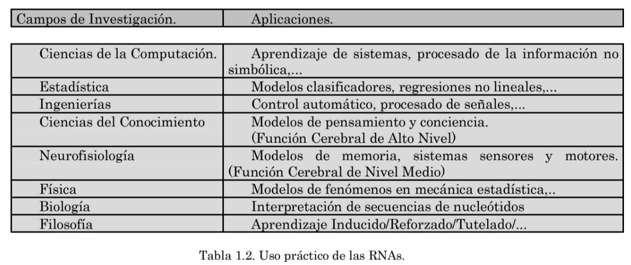
Funcionamiento
El funcionamiento de las redes neuronales artificiales está basado en la simulación de los
sistemas neuronales biológicos humanos, los cuales se constituyen de un conjunto de
interconexiones entre neuronas denominado sinapsis formando una clave principal para el
procesamiento del conocimiento, su estructura es similar a la de un árbol donde cada terminal toma
el nombre de dendritas y estas se encargan de recibir las señales de entradas de las otras.
Por lo tanto las redes neuronales están formando por neuronas artificiales interconectadas entre sí y
distribuidas por capas donde para que pueda fluir la información las neuronas de cada capa se conectan con las
neuronas de las siguientes capas constituyendo así un aprendizaje artificial.
Entrenamiento en aprendizaje de máquina. Para funcionar, las tecnologías de Inteligencia Artificial IA en
algoritmos de Machine Learning que operan con redes neurales que tienen que ser “entrenadas” en volúmenes
masivos de datos. En el contexto de la fiebre de oro global de IA, China – que para la privacidad de los dados
tiene un enfoque diferente al de muchas otras naciones – actualmente tiene una ventaja. Como ellos entrenan
sus redes neurales, los desarrolladores chinos disfrutan de rápido acceso a enormes conjuntos de datos de
propiedad de firmas como Alibaba y Baidu, todos los cuales en últimas están controlados en un mayor grado. En
las economías de Occidente, las compañías carecen de acceso comparable a enormes almacenes de datos
controlados, lo cual los pone – al menos por ahora – en desventaja competitiva.
El tomar una decisión implica servirse en parte (no solo de la información disponible), de la intuición y las
emociones. Esto es debido a que la persona tiende a ver desde una perspectiva imparcial la realidad objeto de
análisis, tomando una decisión rápida o simple, con los riesgos que este hecho conlleva (Lozano, 2013).
Respecto a la toma de decisiones empresarial, aquella que será objeto de nuestro estudio, llama la atención
resaltar el punto de vista de Kahneman (2011), al resaltar que frecuentemente se toman decisiones en este
ámbito de forma rápida, automatizada, implicando poco esfuerzo y razonamiento y denotando sentido de control
de forma voluntaria. Probablemente esta teoría guarde relación con la limitación que presenta el directivo
para procesar información. Conocido como racionalidad limitada (Ruíz et. al, 2013); es decir, al disponer el
directivo de poco tiempo para procesar información relevante y compleja, si no limitada, influirá la
percepción de éste a la hora de tomar una decisión, debido a que simplifica el problema que se plantea,
minimizando así posibles riesgos que no sean contemplados como debieran.
Tal vez también guarden relación con este hecho los estudios de Fernández y Villada (2015), al indicar que el
proceso de pensamiento con el que se asocia la toma de decisiones con mayor frecuencia es la elaboración de
juicios. Juicio entendido como relación lógica entre dos o más conceptos, según la definición aportada por la
Real Academia Española.
Es decir, a la probabilidad de que una opción ofrezca recompensa (juicio de causa-efecto), se uniría la
mejor elección de entre diferentes alternativas (toma de decisiones). Y es que, la precipitación con la que a
veces las personas toman decisiones puede llevarlas a cometer numerosos errores. De este punto nuestra
principal motivación. Tras proveer al lector de información acerca de esta problemática, veremos a través de
la metodología de árboles de decisión distintas soluciones que simplifiquen las actuaciones futuras de los
directivos de empresas, los cuales se enfrentan continuamente a problemas de gran relevancia estratégica,
conllevan el empleo de muchos recursos y requieren de su capacidad para elegir la mejor alternativa.
Los Árboles de decisión ofrecen un apoyo útil para los directivos, porque sin duda simplificará la toma de
decisiones en la empresa, aportando simplicidad y concreción ante una determinada problemática, minimizando
los errores.
El método árbol de decisión consiste en aquella representación gráfica de una serie de secuencias lógicas que
interpretan una realidad, más o menos compleja. Dicha realidad estará desglosada en una o varias secuencias de
eventos, ordenados estos según una línea temporal coherente. De este modo, los sucesos más recientes vendrán
precedidos por otros anteriores, hilvanados y originando las diferentes alternativas de las que el sujeto se
servirá para tomar una decisión al problema planteado. Algunos de estos eventos se conocen como eventos
aleatorios; aquellos cuya realización vendrá influida por una probabilidad, causa de la intervención de
variables externas al individuo que condicionaran los posibles resultados. Otros sin embargo no, ya que serían
decisiones que atañerían exclusivamente al decisor y, por lo tanto, no estarían condicionados por el entorno.
Las diferentes alternativas disponibles conducirán a diferentes escenarios futuros, originando un efecto en
las acciones posteriores que condicionarían los resultados esperados. Además, y visto desde otra perspectiva,
el propio azar es el que influirá en las decisiones por las que a posteriori se debiera de decantar el sujeto
(Vitoriano, 2007).
El árbol de decisión reflejará de forma fiel los pasos que habrá de afrontar una persona, equipo o entidad;
ordenados de manera lógica y atendiendo a unas complejidades concretas.
Los árboles de decisión recogerán las diferentes alternativas con las que vaya a tener que lidiar un
determinado sujeto u organismo, para decantarse por aquella que considere más útil. A veces, dichas
alternativas llevarán asociadas una probabilidad, que explicará la presencia de riesgo. Cuando se trate de
sucesos que no dependan de la decisión directa del sujeto, sino de otras variables del entorno, y vayan
influidas por la aleatoriedad, el riesgo estará presente en forma de probabilidad.
Un Árbol de Decisión es una representación gráfica de una serie de secuencias lógicas que
interpretan una realidad, más o menos compleja.
El árbol de decisión reflejará de forma fiel los pasos que habrá de afrontar una persona, equipo o entidad;
ordenados de manera lógica y atendiendo a unas complejidades concretas.
Por eso es importante que antes de plantear el árbol de decisión, y con el objeto de llegar a una conclusión
más fiable, se haya recogido la máxima información posible, reduciendo así el riesgo.
Para poder diagramar un árbol de decisión es necesario diferenciar dos elementos
principales: por un lado, los nudos; por otro, las ramas.
Los nudos atienden a hitos de gran trascendencia en el caso, sugiriendo al intérprete que en dicho punto se
habrán de tomar decisiones relevantes, o que ocurrirán hechos de cualquier naturaleza que influyan
directamente en nuestros planteamientos, sin que nosotros podamos interferir. También serán puntos donde
se reflejen determinados resultados cuantitativos (nudos finales). A continuación, vamos a
ver cada uno de ellos: los nudos de decisión, los nudos aleatorios y los nudos finales.
a) Los nudos de decisión son representados por un cuadrado, las decisiones son aquellas
actuaciones donde, de forma discriminatoria, se seleccionará una de entre las alternativas existentes. Este
hecho repercute exclusivamente sobre el sujeto decisor (inversor, director de un proyecto, ejecutivo…), que es
quien tiene la responsabilidad final, pues elegirá en términos de conveniencia (mayores ingresos, menores
costos...), una vez haya valorado los datos que aporte del árbol de decisión. No obstante, y a pesar de tener
que comparar todas las alternativas, finalmente elegirá él.
En el diagrama de árbol de decisión, las decisiones se denominan nudos de decisión e irán representada, como
dijimos en un principio, con un cuadrado. Es importante concluir indicando que las alternativas asociadas a
las decisiones no estarán influenciadas por ninguna probabilidad, ya que dichas alternativas son excluyentes.
b) Los nudos aleatorios son los acontecimientos que llevan asociados una
probabilidad de ocurrencia, pues el sujeto decisor no interviene. Se definen como nudos aleatorios bajo el
modelo del árbol de decisión, y son representados con una circunferencia. Estos sucesos vienen condicionados
por el entorno, por cualquier elemento que afecte al caso de estudio.
Lógicamente acabarán influyendo en el resultado final. Cada una de las múltiples alternativas reflejará la
probabilidad de ocurrencia de la misma. De este modo, la suma de las probabilidades de cada una de las
alternativas (ramas del árbol) de cada nudo aleatorio deberá de sumar uno, es decir, la unidad.
¿Cómo diferenciar nudo de decisión de nudo aleatorio?
Las alternativas que parten de un nudo aleatorio llevan asociadas una probabilidad, pero no cualquier
probabilidad que aparezca en los textos estará asociada a una rama aleatoria. Habrá que relacionar una
probabilidad o porcentaje que aparezca en el texto con un nudo aleatorio sólo en el caso de seguir el
planteamiento lógico del problema, y cuando la suma de las probabilidades de todas las ramas del nudo
aleatorio sume la unidad. Así, todas las alternativas deben de estar relacionadas y presentar su peso
porcentual.
Ejemplo:
Un emprendedor pretende comprar para su restaurante un horno de cocina. De los diferentes proveedores, ha
preseleccionado a tres. Resulta que el primer proveedor ofrece un modelo cuya probabilidad de reparación tras
finalizar la garantía es del 75%. El segundo proveedor presenta un horno más caro, pero más fiable, y la
probabilidad de que tenga errores tras su periodo de garantía es del 50%, un 15% más que el horno ofrecido por
el tercero, más selecto y caro. En este ejemplo, el lector podrá deducir que el 15% al que se hace referencia,
no pertenece a ninguna rama de árbol (aunque guarde relación con una de las alternativas). El árbol quedaría
del siguiente modo.
c) Los nudos finales
Los nudos finales cuantifican cada alternativa. Si un árbol comprende dieciséis ramas finales
tendremos dieciséis resultados diferentes y, por ende, dieciséis triángulos enumerados. Los nudos finales
darán información, por ejemplo, acerca de los costes en los que podría incurrir una empresa que contratase a
un proveedor y no a otro;
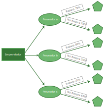
De esta manera, podemos contemplar un nodo de decisión (emprendedor, que es quien elige definitivamente a uno
de los proveedores). Su motivación está influida, por supuesto, por los nudos aleatorios, porque cada
proveedor ofrece un horno que no garantiza la aparición de fallos (reparables tras su periodo de garantía).
Este hecho obliga a analizar las diferentes alternativas, en caso de haber o no haber fallos, y que no
dependen del sujeto, sino de varios factores ajenos a él (calidad del horno, uso del horno durante el periodo
de garantía, estado del horno al desembalar…).
Las decisiones son determinadas únicamente por el decisor. Así pues, el decisor tendrá siempre la última
decisión en el diagrama de árbol, pues es él quien optará por invertir o no en un negocio, comprar una
maquinaria automática o semiautomática, reparar un coche o comprar uno nuevo o, como acabamos de observar,
elegir un horno para su negocio.
Las ramas
Las ramas tienen una importante función, al completar el diagrama y configurarle un sentido y una
orientación. Se representan como flechas en el diagrama para crear un hilo conductor que esté en todo momento
uniendo los nudos, de izquierda a derecha.
La orientación no es en otro sentido distinto. Esto se debe a que la secuencia del árbol de decisión parte de
un nodo de decisión (siempre), y termina con los nudos finales.
Es obvio que la función principal de las ramas es la de configurar el diagrama y darle sentido lógico, pero
también recoge información. Esto es algo muy interesante: si observamos el diagrama de árbol, las flechas
vienen a explicar el evento que ha ocurrido anteriormente.
Si observamos la figura anterior, las flechas que parten del nudo de decisión emprendedor vienen a explicar
que el sujeto escogerá al proveedor a, al b o al c. Las siguientes flechas parten de los nudos aleatorios, y
dichas figuras tienen anexadas una probabilidad y otra información diferente, que surge de dichos nudos
aleatorios.
Por ejemplo, del nudo aleatorio b, las flechas nos informan que el horno proporcionado por el proveedor b,
tiene una probabilidad de presentar errores del 50%, y del 50% de no necesitar reparaciones. Así, podemos ver
que la utilidad de estas flechas es corroborar que las probabilidades han sido bien asignadas, al sumar la
unidad la suma de todas ellas. En este caso, 50% + 50% = 100%.
A continuación, veremos en un cuadro las representaciones que podemos encontrar en un diagrama de árbol de
decisión:
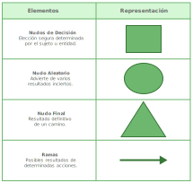
Figura 3. Elaboración propia.
En el caso de los árboles de decisión, trabajaremos con variables aleatorias discretas, es decir, aquellas
que toman un número limitado de valores, normalmente números enteros, producto de un conteo (Rodríguez
et, al.., 2016). También, la variable aleatoria discreta denominada X, tomaría los valores x1,, xk con sus
respectivas probabilidades asociadas: p(x1),...
Por consiguiente, la Esperanza o Valor Esperado se calculará del siguiente modo:
E(x)=x1∙P(x1)+x2∙P(x2)+⋯+xn∙P(xn)
En este caso, la definición estadística de Esperanza o Media para una variable discreta, viene representada
como:
k
μ = E[X] = Σ xi*P(xi)
i=1
Diagramar un árbol de decisión implica ordenar la información con la que se construye de forma coherente, de
modo que el árbol tenga sentido a la hora de interpretarlo. Para ello existen unas reglas básicas que atañen a
la enumeración que deben de seguir los nudos.
Cierre de unidad
Desde su origen, la Inteligencia Artificial (IA) no ha tenido una definición clara y única, las distintas
definiciones de la inteligencia artificial hacen énfasis en diferentes aspectos; aunque existen similitudes
entre ellas. A continuación se presentan algunas de las definiciones iniciales de esta área:
Estudio de la computación que observa que una maquina sea capaz de percibir, razonar y actuar (Winston,
1992).
Ciencia de la obtención de máquinas que logren hacer cosas que requerirían inteligencia si las hiciesen
los humanos (Minsky, 1968).
Nuevo esfuerzo excitante que logre que la computadora piense... máquinas con mentes, en el sentido
completo y literal (Haugeland, 1985).
Rama de la ciencia computacional preocupada por la automatización de la conducta inteligente (Luger and
Stubblefield, 1993).
Máquina Inteligente es la que realiza el proceso de analizar, organizar, y convertir los datos en
conocimiento, donde el conocimiento del sistema es información estructurada adquirida y aplicada para
reducir la ignorancia o la incertidumbre sobre una tarea específica a realizar por esta (Pajares y Santos,
2006).
Clasificación de la Inteligencia Artificial
La escuela clásica dentro de la IA, utiliza representaciones simbólicas basadas en un número finito de
primitivas y de reglas para la manipulación de símbolos (por ejemplo, redes semánticas, lógica de predicados,
etc.), los cuales fueron y siguen siendo parte central de dichos sistemas.
Otro tipo de representación es el llamado sub-simbólico, el cual utiliza representaciones numéricas (o
sub-simbólicas) del conocimiento. Aunque la mayor parte de los libros de IA (Hebb, 1949, Minsky and Papert
1969) sólo enfatizan el trabajo realizado por Rosenblatt y Widrow en la década de los 50’s con redes
neuronales en este tipo de representación.
El enfoque sub-simbólico de la IA se caracteriza por crear sistemas con capacidad de aprendizaje. Éste se
puede obtener a nivel de individuo imitando el cerebro (Redes Neuronales), a nivel de especie, imitando la
evolución. Hasta hace poco era común hablar de Algoritmos Genéticos (AG) en general, en vez de identificar
diferentes tipos de AE, ya que el resto de los algoritmos se pueden interpretar como variaciones o mejoras de
los AG.
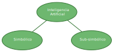
Fig 4. Enfoques de clasificación de la Inteligencia Artificial.
La tecnología digital está transformando de manera fundamental la forma como interactuamos con el mundo.
Personas, máquinas, datos, y procesos se están volviendo crecientemente conectados, y el resultado es una
explosión de información que puede ser usada para entender las necesidades de los clientes. Sin embargo, el
enorme volumen de datos y fuentes de datos requeridos para llevarnos a donde necesitamos ir han excedido el
ritmo y la escala de nuestra capacidad humana para procesarlos, es en donde entra la Inteligencia Artificial
para generar perspectivas que se puedan llevar a la acción a partir de datos en tiempo real para orientar
compromisos y soluciones.
Las tecnologías cognitivas tales como el aprendizaje de máquina [machine Learning (ML)], redes neurales,
automatización robótica de procesos [robotic process automation (RPA)], robots, procesamiento natural del
lenguaje pueden ayudar a tomar sentido de los cada vez más crecientes datos, manejando tanto el volumen como
la complejidad que las mentes humanas y las técnicas tradicionales de análisis no pueden comprender.
En esta unidad conceptualizamos también que las redes neuronales son redes de neuronas que procesan
información basadas en las redes neuronales biológicas capaces de resolver funciones altamente no lineales que
corresponden a sistemas cuyo comportamiento puede ser complejo y frecuentemente impredecibles o caóticos
generalmente difíciles (o imposibles) de modelar.
Se expuso que los algoritmos reemplazan consultas, cada vez más sin supervisión y el auto-aprendizaje
(mediante aprendizaje reforzado, redes generativas adversas, y otras técnicas), lo cual hace posible que las
máquinas exploren potenciales conexiones y descubran patrones y relaciones que la sabiduría convencional nunca
habría considerado.
Abordamos la utilidad de los diagramas generados a través de los árboles de decisión para facilitar la toma
de decisiones al sujeto (emprendedor o directivo en nuestro ámbito empresarial) por otro lado, los datos
fundamentales son una dependencia crucial para lo cognitivo. Los algoritmos y los modelos avanzados dependen
de input de confianza, exacto. Los nuevos enfoques para la administración de los datos y la arquitectura de
los datos proporcionan enfoques más dinámicos para ingerir, clasificar, y correlacionar datos, usando
verdaderas capacidades de aprendizaje de máquina, lenguaje natural a partir de las cuales se construye lo
cognitivo. Pero la mayoría de las organizaciones permanecen en los primeros días del camino. Así como es
importante ampliar la cultura y la dinámica organizacional. Volverse orientado-a-los-datos y analíticamente
curioso no es suficiente; hay un salto extra de fe para permitir que las máquinas actúen y accionen
capacidades centrales del negocio. Hoy, las compañías que están a la vanguardia de la revolución de la IA
están trabajando hacia la siguiente etapa – inteligencia aumentada – en la cual las capacidades de aprendizaje
de máquina [machine learning] ubicadas en los niveles altos de los sistemas de administración de la
información trabajan para aumentar las competencias humanas analíticas. De acuerdo con Davenport, en los
próximos años, más compañías progresarán hacia la inteligencia autónoma, la tercera etapa de la utilización de
la IA, en la cual los progresos son digitalizados y automatizados en un grado en el cual máquinas, robots, y
sistemas pueden actuar de manera directa a partir de la inteligencia derivada de ellos. El camino desde las
etapas de inteligencia asistida hacia aumentada, y luego hacia la inteligencia plenamente autónoma, hace parte
de una tendencia creciente en la cual las compañías se transforman a sí mismas en “organizaciones alimentadas
por IA.” Esta tendencia también se refiere al compromiso sostenido para rediseñar los sistemas, procesos, y
estrategias de negocio centrales alrededor de la IA y sus posibilidades.
Alpaydin, Ethem (2010) Introduction to Machine Learning. The MIT Press, Segunda Edición. James, G., Witten,
D., Hastie, T. y R. Tibshirani (2013) an Introduction to Statistical Learning with Applications in R. Series:
Springer Texts in Statistics. Hastie, Trevor, Tibshirani, Robert y Jerome Friedman (2009) The Elements of
Statistical Learning. Data Mining, Inference, and Prediction, Series: Springer Series in Statistics, Segunda
Edición.
Benitez, R., Escudero, G., Kannan, S. y Masip, R. (2010) Inteligencia Artificial Avanzada. España: UOC.
García Serrano, A. (2016) Inteligencia Artificial Fundamentos, práctica y aplicaciones. México: Alfaomega.
 Presentación de unidad
Presentación de unidad Objetivo de unidad
Objetivo de unidad Da clic en cada uno de los títulos para obtener más
información.
Da clic en cada uno de los títulos para obtener más
información. Fuentes de consulta
Fuentes de consulta